Mobile app · EdTech · Outsourced · 2022–23
Edumentr — a study-abroad app that takes a student from "where could I go?" to a submitted application.
Edumentr helps students in India find courses and universities abroad, understand what each one asks for, and apply — with documents, eligibility and visa steps handled inside the app instead of across a dozen university websites. I designed the iOS / Android app end to end, as an outsourced engagement through QUBD Technologies.
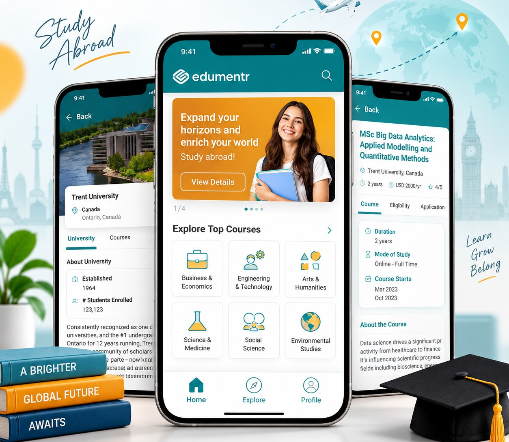
Summary
Mission
Applying to study abroad is a research project before it's a form: which countries, which universities, what the course actually covers, what score you need, which documents, what the visa process looks like, and how much it costs per semester. Most of that lives on separate websites written for someone who already knows the answers. Edumentr's job was to put the whole journey in one place, on a phone — browse, shortlist, check eligibility, upload documents once, apply, and track — so a first-time applicant never feels lost between steps.
My contributions
I owned the app design from structure to final UI. First the information architecture — four tabs (Home, Explore, Applications, Profile), an explore model by course, university and location, and a course page organised as five tabs: Course, Eligibility, Application Process, Visa Procedure and University. Then the flows around it: mobile-number sign-up with OTP and social login, search with filters and honest empty states, a profile-completion form, a one-place document locker, and the application tracker with progress and status. I built the teal visual system, the hexagon brand texture, the category icon set and the component library the screens are made from.
Impact
Delivered as a complete high-fidelity Figma design — 60+ screens across sign-up, explore, search, course details, documents, applications and profile — with a reusable component set and a scratchpad of explored alternatives, ready for the development team.
Get in fast, then explore.
Students shouldn't have to create an account to look around. Sign-in is a mobile number and an OTP, or one tap with Google, Facebook or Apple — and "Skip for now" is right there. Home leads with the pitch, then the four things people actually browse by: top locations, trending courses, top universities and success stories.
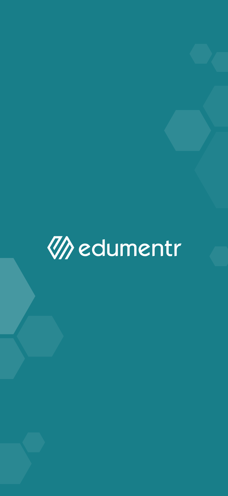
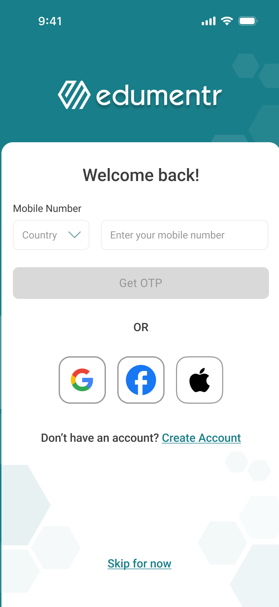
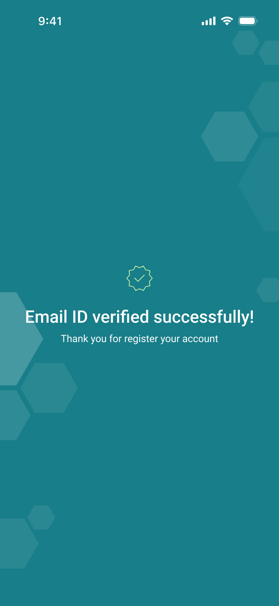
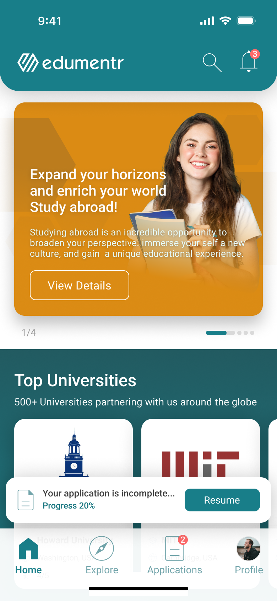
Browse before you sign up
Every explore and course page works logged out. The account is asked for at the moment it's needed — saving a shortlist or starting an application — not at the door.
The unfinished application follows you
A small "Your application is incomplete… Progress 20% — Resume" card sits on Home and Explore. It's the single most useful thing to show a returning user.
Three ways in: course, university, location.
Some students know the subject, some know the university, some only know the country. Explore has a switch at the top for exactly that, with an illustrated category grid underneath — Business, Engineering, Arts, Science & Medicine, Social Science, Environmental Studies — and search with filters for country, fees, study level, mode, language, intake and duration.
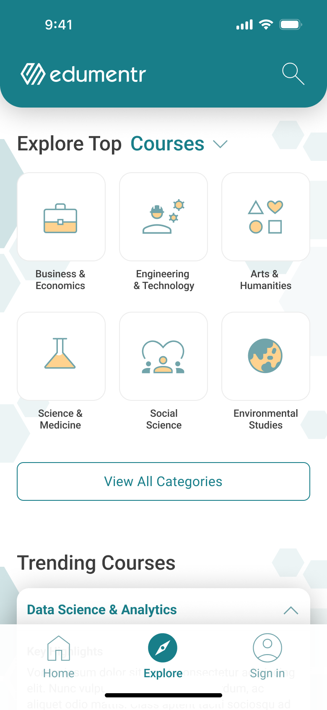
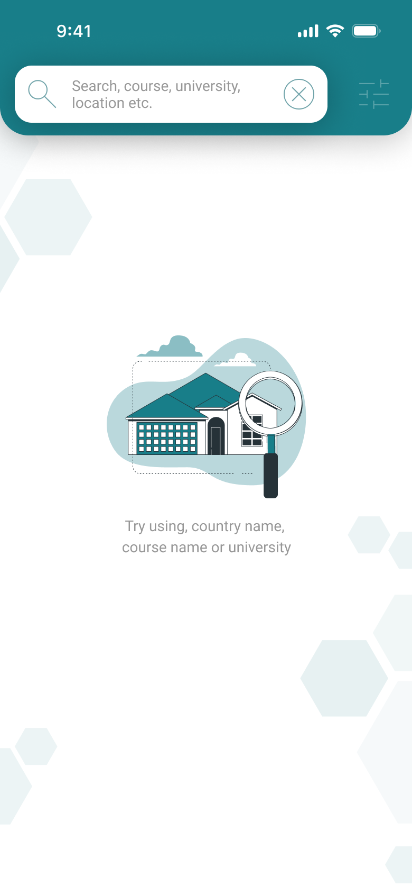
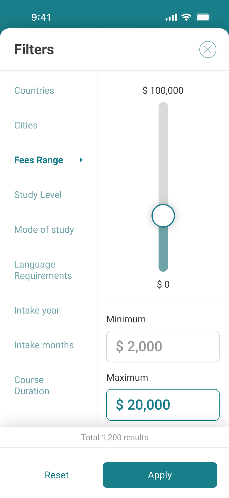
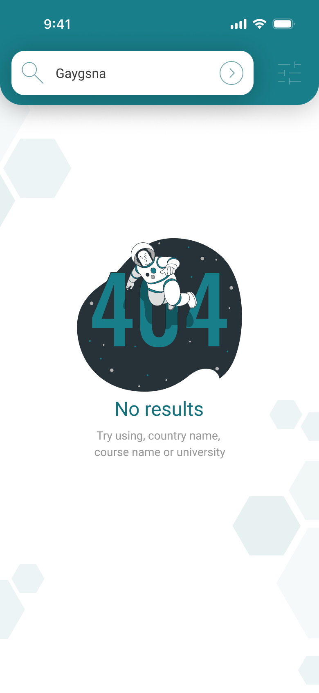
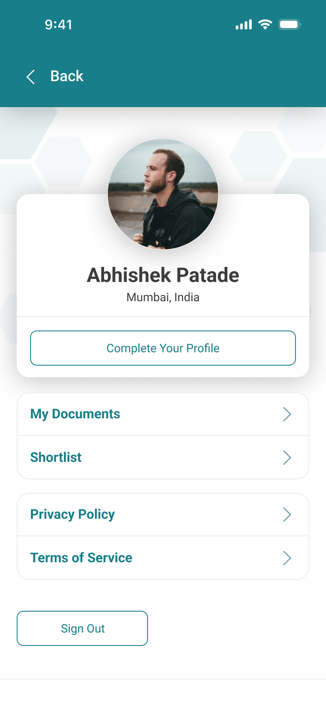
Icons for categories, photos for places
Categories get a consistent illustrated icon so the grid scans in a second; locations and universities get photography, because that is what makes a student picture themselves there.
Empty states that teach the search
Both the fresh search and the no-results state say the same thing — try a country, a course name or a university — so the user learns the search from the state, not from a tutorial.
One course page, five questions.
A course page has to answer: what is it, can I get in, how do I apply, what about the visa, and what's the university like. That became five tabs under a fixed header, with "Get Admission" pinned at the bottom of every one — so the decision and the action are never more than a thumb apart.
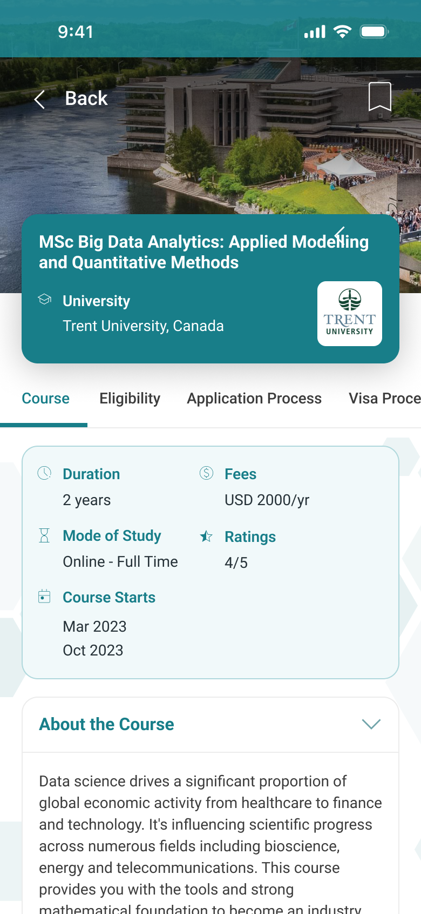
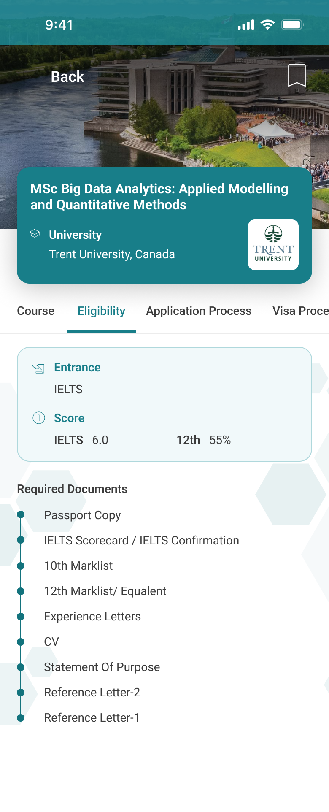
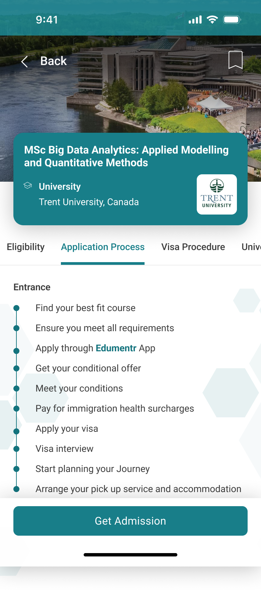
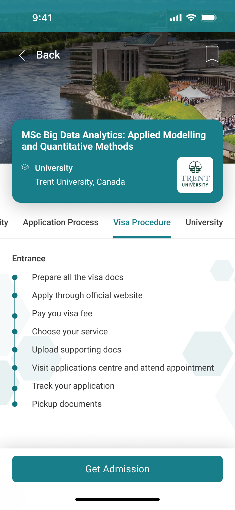
Numbers first, prose second
Duration, mode, start dates, fees and rating sit in a compact card above the fold. The course description comes after — most students compare on the numbers before they read.
Fees as a table, per semester
"USD 2000/yr" is a headline; the international fee structure table shows each semester and the total, which is what a family actually budgets against.
Documents once, applications many.
Every application asks for the same passport copy, marksheets, IELTS scorecard and CV. So the app has a single document locker under Profile — upload each once, see it verified, reuse it in every application. The application itself is a three-step process (Personal Information → Submit Documents → Apply) with a tracker that splits in-progress from submitted.
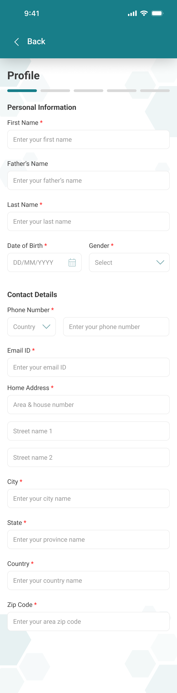
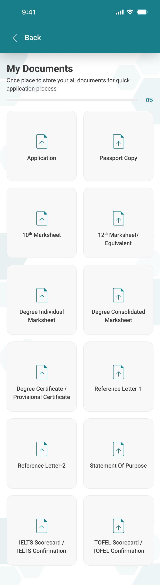
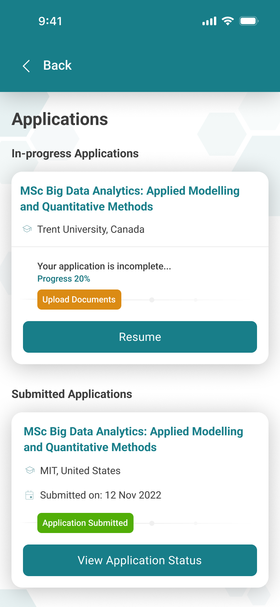
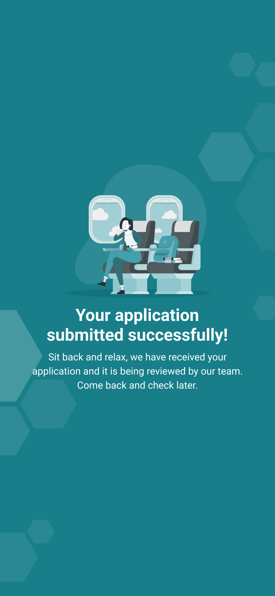
Upload once, verify once
Documents live on the profile, not on the application. A verified marksheet stays verified for the next three applications — which is the difference between applying to one course and applying to five.
Progress is a number
"Progress 20%" appears on Home, on the application card and in the document locker. One number, three places, always in sync.
Visual system.
A single deep teal carries the brand — headers, primary buttons, active tab, links — over white cards and a faint hexagon texture. Orange is reserved for the one thing that needs to pop: the hero card and the "Upload Documents" call to action. Illustrations are line-and-fill in the same teal so empty states feel designed, not stock.
What I'd carry into the next consumer app.
- Structure the page around the user's questions. Five tabs named after what a student asks — not after what the database has — made a very dense course page feel simple.
- Let people in before you ask for anything. Skip-for-now and logged-out browsing cost nothing and remove the biggest drop-off point.
- Design the empty and error states as first-class screens. They're where a nervous first-time user decides whether the app is on their side.
- Put the repeated thing in one place. A document locker turned "apply to one" into "apply to many" without any extra design.
Building a consumer app with a long, multi-step journey?
Happy to talk through how the explore model and the course page came together.